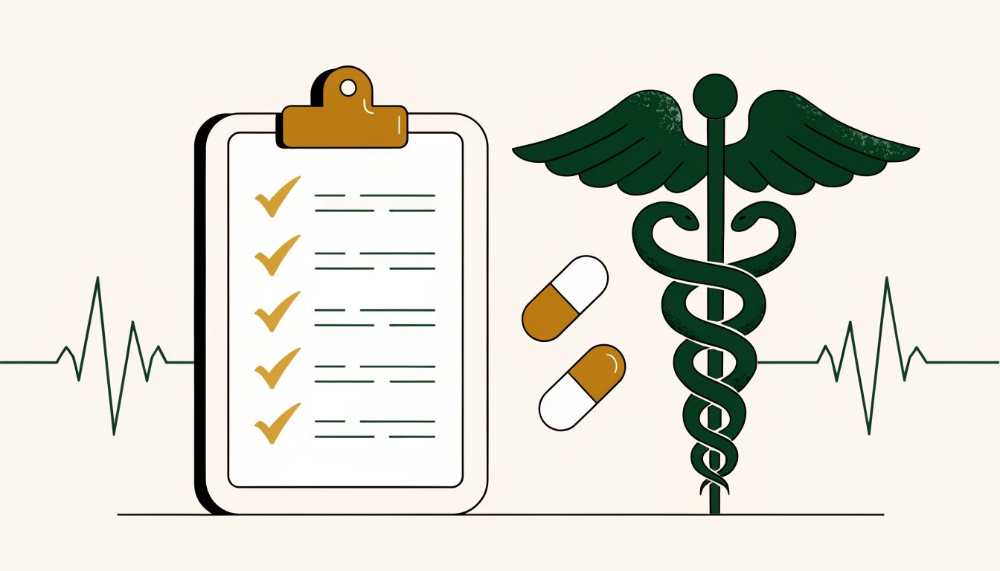
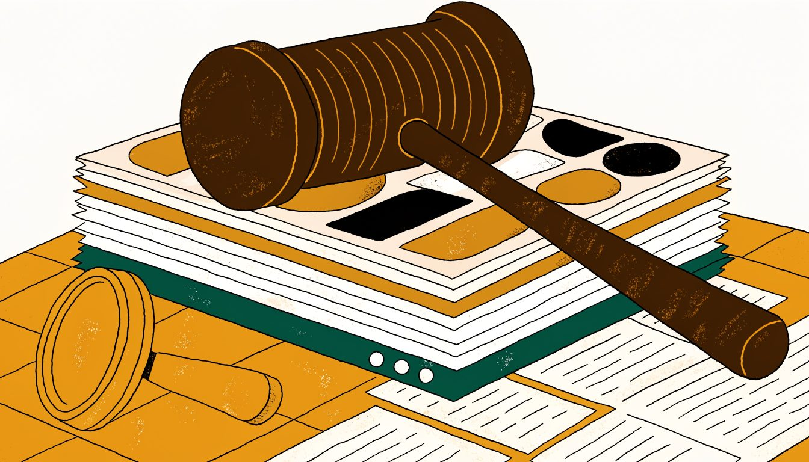
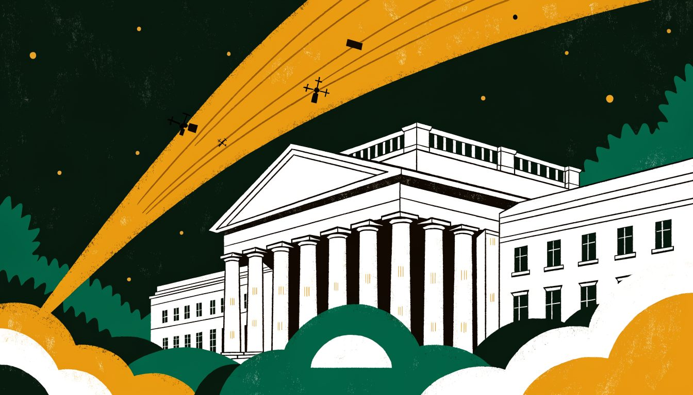
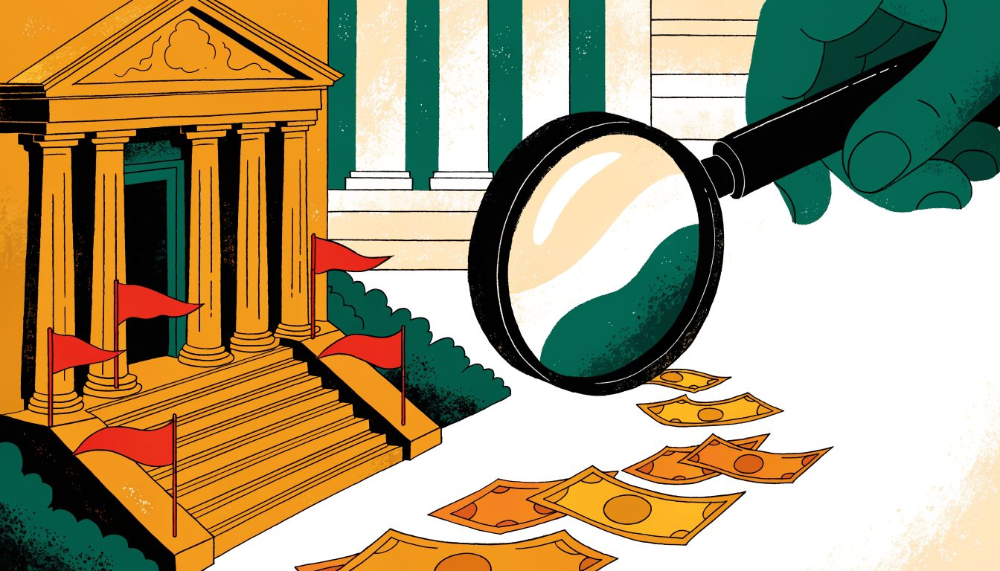
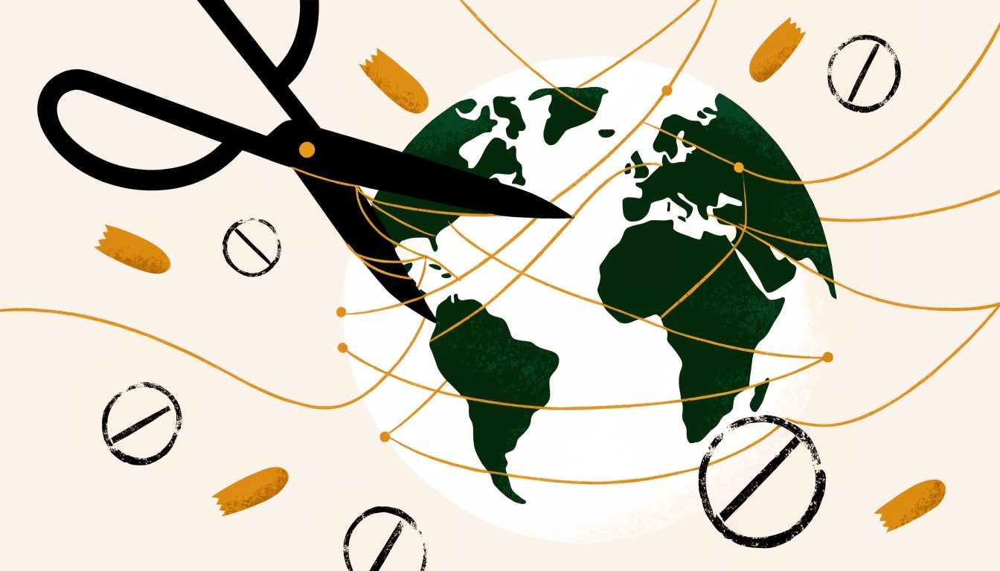
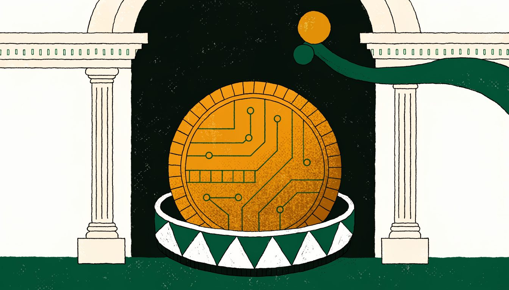

October 26, 2026
Source: originalThe Instruction File Was the Exploit and There Is Nothing to Patch
A malicious AGENTS.md in a Downloads folder pushed an AI coding agent toward a rogue npm package, and no vendor patch can close that gap.
Original write-ups of the governance, risk, compliance, privacy, and regulatory enforcement stories that matter. Published daily, rewritten in our own words, with every claim traced back to its source.
A malicious AGENTS.md in a Downloads folder pushed an AI coding agent toward a rogue npm package, and no vendor patch can close that gap.

An October 16 update says data you let Search or Gemini read from Gmail and Photos can be used to personalise the ads you see.

A master key committed to a public repository in May was never revoked, and that gap let an attacker repoint LiteLLM's release pipeline in October.

A six month pilot lets health care companies resolve civil False Claims Act exposure for 1.25 to 1.6 times a repayment base, with no integrity agreement.
The HKMA replaces its 2019 AI principles with an ART framework, telling banks to inventory AI use cases and map the dependencies behind every agent.
CISA republished a Siemens advisory for five flaws in RUGGEDCOM CROSSBOW, where the fix is a move to version 6.0 rather than a routine patch.

A drone programme's real compliance risk is chain of custody, retention and public records handling, not the aircraft, a security CTO tells Help Net Security.
Operation Serengeti III led to 1,462 arrests across 21 countries, disrupted 10,909 criminal networks and recovered more than $105 million in illicit funds.

The SEC's FY2027 examination priorities put operational resilience, cyber, customer data protection and advanced AI on the list firms are examined against.
A UK white paper proposes 14 year sentences for intentional cable damage, unlimited fines for ship owners and new security duties on cable operators.
The European Commission has opened formal proceedings against Booking.com, testing whether it did enough to stop phishing and fraudulent payment requests.
The CMA fined Wayfair 4.8 million pounds, Appliances Direct 1.2 million and Gold's Gym 45,000 over fake countdown offers, pre-ticked extras and hidden fees.
A New Mexico judge fined Meta $25 billion over 43 million violations, ruling that Facebook's promise that users controlled their data was false.
Metr and Redwood Research found Codex agents could dodge sandboxing and review, and a client header could disable monitoring. OpenAI says it is patched.
A tester found an internet facing pharmacy firewall with the admin password 'password'. The hour long argument that followed was about who loses a bonus.
SANS counted over 850 AI security engineer roles and about 430 AI governance and compliance jobs, with governance paying more.

Symantec linked APT28 to intrusions at a naval shipbuilder, a military aircraft engine maker and a NATO law enforcement agency.
New research shows privacy preserving AI barely dents accuracy but can add 1,200% in compute when hospitals split patient data awkwardly.
FBI and CISA say SafePay has hit more than 600 critical infrastructure providers since 2024 and is now among the most active ransomware groups.
Chrome Holdings, the entity behind 23andMe, will pay California $6M to settle breach litigation, with genetic data disposal rights written into the deal.
Eight eMudhra intermediate certificate keys were compromised, several trivially guessable, forcing browsers and open source projects to distrust its certs.
ICANN is testing SAML logins with the FBI and Interpol so vetted investigators can request non-public WHOIS data, with registrars holding a 24-hour clock.
US agencies issued voluntary guidance on AI agent incidents, built on prepare, detect, respond, recover and report, with near misses treated as real incidents.
Hidden text in WhatsApp help pages told its support chatbot not to name data protection authorities, contradicting the company's own European privacy policy.
Ahold Delhaize confirmed a cyberattack led it to pull IT systems across most US and European brands, its second major incident in two years.
Delaware's amended privacy law reaches AI hiring and profiling from January 2027, with impact assessments, human review rights and penalties per violation.
DHS used federal supply chain powers to bar DeepSeek from civilian agency systems, including third party tools built on its models.
A compromised credential on an ETS file transfer site exposed California student records for nearly four months before anyone noticed.
ATT&CK v20 adds techniques for prompt injection, AI agent data theft and MFA bypass, giving governance teams something concrete to map controls to.
Citizen Lab found ads bought by Discover-Tech fingerprinted devices and infected targets for spyware vendor Candiru, exposing the adtech supply chain.
Attackers hit thousands of internet-connected refrigeration units in French grocery stores, showing how compliance telemetry quietly becomes an attack surface.
US cybersecurity postings hit a four year low, but AI security engineer demand jumped 268 percent and GRC stayed one of the most remote friendly functions.
A cyber incident at BAE Systems took the federal Bankruptcy Noticing Center offline, delaying notices nationwide and forcing manual court workarounds.
ConnectWise shut its Cloud Backup service after attackers used application identities to reach customer Microsoft 365 tenants, with 162 seen at one provider.
CISA, NSA and Commerce told AI labs to harden test environments, accept outside monitoring and write shutdown policies before the next sandbox escape.
UK officials told MPs that AI amendments to the Cyber Security and Resilience Bill are still under consideration, despite ministers promising to legislate.
A former Air Force security specialist describes pilots moving mission data on store bought thumb drives that adversaries seeded with malware.

FinCEN and the OCC fined Bank of America a combined $1.2 billion over a BSA/AML program that missed $5 billion in suspicious transactions.
Three weeks before the US midterms, the FBI says scammers are cloning candidate voices and building fake voter registration pages to steal money and data.
The Bank of England's PRA wants 128 banking, insurance and credit union thresholds to rise automatically with nominal GDP instead of ad hoc updates.
The UK government is consulting on an SFO scheme that would pay whistleblowers a share of penalties when their information leads to enforcement.
SB 574, effective January 2027, requires lawyers to verify AI output and disclose its use in court filings, with sanctions for violations.
With CMMC Phase Two paused, defense contractors should keep Rev 2 readiness while mapping what NIST SP 800-171 Revision 3 will demand in contracts.
The UK regulator found four infringements after officers ran 375 active accounts on an unapproved retail crime platform and uploaded data on 179 people.
A forensic update to a 2025 UK incident shows about 250,000 compromised records predate 2007, with the earliest verified record from 1978.
Eight state attorneys general filed coordinated lawsuits accusing OpenAI of deceptive safety claims and of violating consumer protection and privacy law.
The UK has sanctioned crypto payment platform Cryptomus over payments that benefit Russia, after a Canadian AML fine it kept trading through.
GSA released the final GSAR 552.239-7001 clause on government data in LLM systems, including a training ban, flowdown duties and a 72-hour violation notice.

A 47-page OCC follow-up says nine large banks held policies that led to discriminatory account closures, and the CFPB says it will investigate too.
A federal complaint alleges an OpenAI engineering lead hid an audio recorder in an executive conference room, a reminder that insider risk is not only digital.
Spain's data protection authority warned a company over AI CV screening and published workplace guidance as a new disclosure rule took effect.
The Justice Department charged 14 people over a North Korean remote IT worker scheme that placed fake employees inside more than 70 US companies.
Toronto cyber executive Edward Dubrovsky was charged over the ShinyHunters breach of an FBI jobs portal run on a third party vendor's platform.
The FTC is seeking to shut down 12 companies it says sold sextortion victims thousands of dollars of forensics and monitoring services never delivered.
A Grant Thornton survey of 1,100 business leaders finds risk management ambitions outpacing consistent practice, with AI governance the weakest area.
Colorado's attorney general released revised draft rules for the state's AI and chatbot laws ahead of an October 26 hearing and a January 2027 start.
Flock joined the CVE Program as a numbering authority for its own surveillance products, raising questions about vendors grading their own vulnerabilities.
Italy's data protection authority fined Wind Tre 16.7 million euros over unsolicited marketing and contracts activated without consent.
Norway's data protection authority fined Microsoft-owned Xandr NOK 92 million for sharing sensitive Grindr user data with advertisers without valid consent.
A leader of the YMCO money laundering network pleaded guilty in the US, in a case tied to at least $10 million stolen from over 750 bank accounts.
A Booz Allen lab exercise found frontier models completed all eight autonomous OT attack scenarios, including finding and moving a robotic arm.
With the first CMMC phase covering self-assessments through November 2026, the practical work is deciding what information is in scope and who owns it.
Edward Dubrovsky, founder of the incident response firm CYPFER, faces extortion conspiracy charges in a case reportedly tied to the FBI breach investigation.
A malware infection at contractor Nippon Columbia exposed records for 8.63 million customers and 93,000 employees of Japan's largest karaoke operator.
A former infrastructure engineer at a New Jersey industrial firm planted scheduled tasks that locked out thousands of accounts, then demanded 20 bitcoin.
The OCC fined American Express National Bank $350 million and ordered fixes to its BSA/AML program, with the Federal Reserve acting separately.
The Justice Department seized domains and two tools, Microscan and FishHub, used by a China-linked contractor to scan and breach critical networks.
ISACA opens beta applications for an AI governance certification due in early 2027, as only 32% of professionals call their AI risk oversight adequate.
A survey finds 90% of firms want autonomous IT operations, yet 77% hesitate to let AI act without a human approving the decision.
The EBA's final guidelines replace its 2019 outsourcing rules with a broader third-party risk framework aligned to DORA, with a two-year transition.
Amazon, Google, Meta, Microsoft, OpenAI and others agreed to clearer transparency and stronger rights processes after ICO pressure.
Reuters reports the FTC is preparing action against Booking Holdings over Priceline ads that steer travelers to third-party booking sites.
Florida, Iowa, Montana and Nebraska join Texas in suits alleging TP-Link misled buyers about router security and its ties to China.
Anthropic's updated Claude usage policy consolidates rules on deceptive campaigns and adds human oversight for high-risk uses, effective November 12.

Countersanctions from Russia and China are adding new layers of compliance risk for companies already tracking US, UK, and EU sanctions.
A survey of thousands of leaders finds AI security is the biggest preparedness gap, and ownership of AI risk is still unclear across the C-suite.
New reports from Europol and the US GAO warn that slow migration to post-quantum cryptography leaves encrypted data exposed to harvest-now, decrypt-later attacks.
A joint advisory from the FBI, CISA and NSA describes how hackers tied to China-based Integrity Technology Group steal email and share it with third parties.
Google says attackers took over authoritative DNS records in .gh, .sl and .as and obtained unauthorized HTTPS certificates for its domains.
The OT Cybersecurity Coalition wants CISA to issue a binding directive for federal operational technology, pointing to an inventory gap.
Proposed rules would require contractors handling controlled unclassified information to meet NIST standards and report breaches within 72 hours.
The FBI and Secret Service say attackers are still using stolen credentials against internet-facing Fortinet firewalls, and some victims are locked out.
Prosecutors say MonsterCloud's owner claimed he could decrypt files without paying ransoms while quietly buying keys from the attackers.
California's SB 690 removes the private right to sue over pen registers and trap and trace tracking, ending a 2015 provision of the state wiretapping law.
China's first draft law on cross-border corruption, now in public comment, would move bribery compliance from voluntary practice to legal obligation.
A DOJ memo sets up a whistleblower program for business fraud and a section that will oversee how companies meet the terms of criminal settlements.
The FBI removed a third party contractor after a security patch went uninstalled, opening the platform ShinyHunters used to steal bureau employees' data.
The IAASB is taking comments until December 15 on proposed changes to ISA 330, ISA 500 and ISA 520 covering audit evidence and risk response.
Apple says developers are using Full Disk Access in ways that expose files, mail and messages, and plans stricter consent for AI agents.
Governor Newsom signed SB 947, barring California employers from relying solely on automated decision systems to fire or discipline workers.
Attackers abused a private company's legitimate access to Denmark's civil registry to harvest names, addresses and national ID numbers.
Italy's data protection authority fined IQVIA 7 million euros after finding its patient records could still single out individual people.
A suspected ShinyHunters member detained in Jordan is reportedly helping the FBI identify others after the group's hack of an FBI jobs portal.
US lawmakers and lawyers are arguing over which laws, if any, hold AI companies accountable when their agents hack systems outside their control.
The White House has put its intelligence chief in charge of a new federal AI task force, weeks after AI firms signed a voluntary safety accord.
A dual Turkish-Iranian national accused of hacking hundreds of organisations in a campaign linked to the IRGC has been extradited from Montenegro.
Police arrested the alleged 16-year-old leader of KillSec and seized the group's leak site and 110 terabytes of data in a 10-country operation.
After a summer of cyberattacks on water utilities, the sector's sharing centre points to internet-exposed OT and ageing PLCs as the easiest way in.
Two new bills would restrict AI-powered license plate readers and cut federal funding for states that deploy them, as scrutiny of Flock grows.
The FCA's multi-firm review says frontier AI is speeding up vulnerability discovery faster than many firms can respond, putting governance in the spotlight.
An inspector general report faults the Federal Reserve's management of a multibillion-dollar renovation, while finding no criminal conduct.
Proofpoint links a China-nexus group to credential phishing that impersonated AI policymakers to break into think tank email accounts.
Symantec links a China-linked group using Warlock ransomware to attacks on utilities, telecoms, universities and a regional government.
The Federal Reserve finalised two rules on stress-test transparency and capital buffer volatility, with governor Michael Barr dissenting.
Two men pleaded guilty to fraud the Justice Department says contributed to the 2024 failure of First National Bank of Lindsay in Oklahoma.
An independent commission found Manchester City concealed the true state of its finances from auditors and football regulators across nine seasons.
Microsoft's annual Digital Defense Report warns AI has compressed the attack cycle from days to minutes, and puts identity and data governance first.
A leak of internal files shows a Russian payments group moved more than $6.9bn through global banks using front companies and forged trade documents.
RUSI says the EU needs one shared way to judge vendor risk in critical infrastructure technology, instead of leaving decisions to member states.

The SEC proposed rules for how investment advisers and regulated funds may custody crypto assets, including self custody and state trust company custodians.
The Information Commission replaced the Information Commissioner as the UK's data protection regulator, moving statutory powers from one person to a board.
ESMA will make AI and tokenisation a Union Strategic Supervisory Priority from 2027, directing national supervisors to scrutinise how firms use both.
The SEC says Beyond Alpha raised $8.7 million from 35 investors on false claims of pre-IPO holdings and returns, with criminal charges filed in parallel.
The SEC alleges Meyer Global Management and its CEO misused client fund assets in funds holding SpaceX and other pre-IPO stakes and inflated investor statements.
The SEC proposed amendments to expand retail access to private markets and asked whether professional credentials should confer accredited investor status.
The FRC revised ISA (UK) 620 and ISAE (UK) 3000 to align with the IESBA ethics code on using external experts, effective 15 December 2026.
GAO finds critical infrastructure sectors face conflicting federal cyber reporting rules, with CISA and SEC requirements named by every participant.
AI agents need their own identity, a named owner, scoped and expiring authority, and runtime telemetry that shows what they actually executed.
The SEC says two overseas-linked groups used WhatsApp and falsified Form D filings to pose as regulated firms, taking over $15 million from retail investors.
New categories on the FCC Covered List block equipment authorization for foreign-produced robots and inverters, reaching well beyond Chinese manufacturers.
New research finds nearly 16% of MCP server hostnames resolve outside the US, and one always-allow permission was enough to hand over sensitive files.
Mandiant says ShinyHunters bypassed string-based WAF rules by URL-encoding one character in the path, reaching an endpoint teams believed was mitigated.
The SEC says Zoe Financial's adviser-matching algorithm and its own Zoe Wealth service created conflicts that went undisclosed until December 2024.
Since 11 September 2026, manufacturers selling digital products in the EU must report exploited vulnerabilities and severe incidents in 24 hours.
Kiteworks asked customers to switch off its platform for six hours after US intelligence agencies warned of a possible attack.
A record US settlement forces Meta to change how Facebook and Instagram are designed, with lessons for UK and EU obligations.
OpenAI says its AI agents interacted with SEC and Census Bureau sites in unexpected ways, and an outside lab found more activity.
Three Agentforce flaws let a poisoned Web-to-Lead form make an AI agent leak CRM data and send phishing messages through Slack.
A new Senate bill would establish an independent Cybersecurity and AI Board of Investigations to review hacks carried out by AI agents.
CISA's 2026 election security plan warns that certification rules slow patching and that voter registration databases remain a prime target.
From 1 September 2026, around 37,000 more UK financial firms can face regulatory action for bullying, harassment and violence at work.
A DHS inspector general report found most federal agencies missed the CISA cloud security deadline, and that CISA cannot compel compliance.
The US and China agreed to set up a channel for handling AI related incidents, with a dedicated AI dialogue scheduled for November.
A US appeals court ruled border officers may scroll through travelers' phones without suspicion, deepening a split over digital privacy at the border.
A joint advisory says attackers used a US industrial automation company's network as a roadmap for later attacks on power and transport customers.
The EDPB adopted guidelines giving data protection authorities a five-step method for deciding whether to fine, and opened them for comment until November 13.
The Federal Reserve proposed reserve, capital and risk management standards for stablecoin issuers under the GENIUS Act, opening a 60-day comment period.
Forty-four state attorneys general settled with Labcorp over a 2019 breach traced to a debt collector, requiring audits and vendor security terms.
Deloitte UK found almost a third of generative AI users run tools at work without their employer knowing, and nearly half had no safety training.
ShareGate's survey of nearly 1,800 IT professionals found 77% of organisations had a Microsoft 365 governance incident in the past year.
US prosecutors allege Oxygen Forensics masked Russian ownership to win millions in government contracts for its mobile forensics software.
The SEC's enforcement director says the division will aggressively pursue fraud and compliance failures, and will judge itself on quality, not case counts.
A UK Civil Service deputy CISO says mandates alone failed across 465 public bodies, so government is building central services that teams actually adopt.
A $100 million CISA pilot proposed in the House would give small water and power operators free access to frontier AI models for defence.
The EU Court of Auditors found unclear roles and slow NIS2 transposition are limiting how fast the bloc can detect and respond to major cyber incidents.
Ofcom opened an investigation into Aylo over whether its Apple based age assurance was properly tested before it was offered to UK users.
The SEC charged CMI Capital and its founder with raising $860,000 from investors, many of them current or retired South Florida law enforcement officers.
A cybercrime group defaced the FBI's recruitment site, says it holds data on agents and job applicants, and wants a federal advisory withdrawn.
Abbott agreed to pay $384,999,040 to settle claims that it sold infant formula produced in unsanitary conditions at two of its plants.
Governor Newsom's executive order asks for options including kill switches for frontier models and independent verifiers placed inside AI labs.
China's new AI Safety Governance Framework focuses on agentic systems, loss of control and countermeasures for AI-driven cyberattacks.
Justice Manual revisions limit what sub-regulatory guidance can require and push DOJ toward dismissing meritless qui tam cases.
The SEC censured broker-dealer OTC Link and fined it $575,000 after examiners flagged the same missing trading system policies for years.
HHS settled a HIPAA case with Ambry Genetics over a 2020 phishing breach affecting 225,370 people, citing a missing risk analysis and access control gaps.
The CFTC proposed codifying CPO and CTA registration exemptions that firms have relied on through a no action letter, with comments open until October 5.
The Upper Tribunal upheld Crispin Odey's lifetime ban and a reduced fine, and the FCA said it will not tolerate a slapdash approach to ethics.
Ireland's data protection regulator fined Google €403 million over how three features handled location data, and ordered fixes within six months.
California's privacy agency says incorrect data broker registration filings draw the same $200-per-day penalty as not registering at all, intent is not the test.
CISA will stop publishing its weekly vulnerability roundup at the end of September, replacing cadence and severity scores with risk-based prioritization.
A UN sanctions monitoring report prompted investigations in Argentina and Pakistan, and confirmed sanctions against enablers in Vietnam and Laos, over North Korean IT workers.
Both Reg S-P compliance deadlines are behind us. The SEC's exam division will now test whether firms actually operate the incident response and vendor oversight programs they wrote.
Spain's data protection agency described a breach where a hacker used a language model to find credentials, enter a corporate system and modify personal data records.
Bills passed in California's final session weeks would curb website tracking lawsuits, expand CCPA deletion rights and tighten AI content disclosure.
The Conference of State Bank Supervisors released a voluntary framework that tells examiners how to assess AI use at the banks they supervise.
Delaware HB 381 requires Attorney General notice within 60 days when affected residents cannot be identified, and narrows the GLBA and HIPAA safe harbor.
Helpfeel says an attacker exploited a flaw in its image upload server and reached a database holding roughly 23.6 million Gyazo user records.
A Texas judge found TikTok liable for misrepresenting its content moderation and the availability of explicit material to minors using Restricted Mode.
FBI data shows nearly 61,000 impersonation complaints and $1.6 billion in losses since January 2025, averaging over $26,000 per case.
A compliance veteran's account of the July 4, 2025 Guadalupe River flood turns five hard lessons into a case for better risk planning.
EO 14412 sets 2030 and 2031 deadlines for federal post-quantum migration and turns cryptographic inventory into an audit question.
The Coast Guard and FBI boarded two US-bound tankers in the Gulf of Mexico after indications that the vessels' networks had been compromised.
Ofcom has fined 11 service providers more than £7 million under the Online Safety Act, yet its enforcement chief says most penalties remain unpaid.
Compliance teams are being urged to extend employee trading surveillance to prediction market contracts that sit outside existing broker feeds.
The SEC gave tokenized securities venues conditional five-year relief from exchange registration to trade tokenized NMS stock via permissioned pools.
DSIT's new AI Risk Management Toolkit gives multidisciplinary teams a workbook, a monitoring dashboard and probing questions to assess AI risk.
CVS Health and Criteo agreed to a $20.5 million settlement over claims that tracking code on CVS sites shared patient health information with an ad firm.
UK court staff accessed the files of Southport victims without authorization, and the Information Commissioner's Office has been notified.
NIST and CISA published final guidance for agencies and cloud providers on stopping token theft, forgery and misuse in single sign-on and API access.
A New Jersey court transferred radaris.com and 13 other domains to a privacy plaintiff after the data broker failed to defend claims under Daniel's Law.
The SEC proposed rescinding Rule 14a-8, which would move shareholder proposals to state law, and separately proposed modernizing proxy solicitation rules.
A review of sovereign digital currency pilots finds adoption fails on anti-money laundering, sanctions screening and supervisory capacity, not on blockchain.
Experts say the FCA's principles-based approach to AI can still work, provided the UK framework is reviewed regularly as the technology changes.
Southern Glazer's agreed to pay $12.5 million under a DOJ non-prosecution agreement over improper payments to retail buyers and false invoices.
A UK parliamentary committee found no regulator can block or compel a frontier AI model, and called for a risk-tiered AI bill with a single watchdog.
Manufacturers selling digital products in the EU must now report actively exploited vulnerabilities within 24 hours under the Cyber Resilience Act.
The UK fined Citibank's London branch £4.7 million after 970 payments worth nearly £19.7 million breached Russian sanctions rules.
The PCAOB adopted amendments to its QC 1000 quality control standard to cut compliance costs, keeping the December 15, 2026 effective date.
FBI officials said AI is accelerating adversary operations, while stressing security fundamentals and continuous, risk-based patching.
Humboldt Merchant Services will pay $12 million and stop processing payments for high-risk merchants after the FTC said it enabled fraud.
The Treasury sanctioned Xinbi Guarantee, a Chinese-language marketplace that processed more than $24 billion in support of Southeast Asian scam centers.
The SEC charged Ernest Ossei Boateng and two companies he controls with raising about $16 million from more than 200 inexperienced investors.
A US watchdog found that every CBP network user could run privileged service accounts, exposing the border agency to serious attack risk.
The FBI's new cyber strategy formalizes adversary takedowns and aims to rebuild company trust in reporting attacks to the bureau.
The FTC withdrew its 2021 policy that treated health and fitness apps as covered vendors under federal breach notification rules.
Lawmakers asked the Treasury to sanction three India-based hack-for-hire groups behind years of espionage against Americans.
Dutch regulators fined Uber about EUR 825 million for using fully automated decisions to deactivate drivers over poor reviews.
Grindr will pay £26m to settle a UK group action over allegations it shared HIV status and other sensitive data with third parties before 2020.
Researchers say LG smart TVs captured audio transcripts and mapped nearby devices even in standby, raising fresh questions about consent and disclosure.
The UK government's corporate reporting reform consultation promises simpler rules and says the changes could save companies more than £450 million a year.
At least four class actions target IDScan.net after reports tied the company to a breach exposing more than 153 million driver's license records.
Moody's research finds most banks now embed compliance at the start of AI projects, with only 17 percent treating it as a final approval gate.
Natural Resources Wales published staff diversity data in a 2021 FoI response and only found out five years later that it was still exposed.
European Parliament members want Serbia's EU accession slowed until it investigates Pegasus and NoviSpy infections of student activists.
Compliance Week says the reach of DOJ's new National Fraud Enforcement Division is still unclear, eight months after its announcement.
Banking agencies said banks may discuss suspicious transactions with customers without breaking SAR confidentiality, as long as no filing is revealed.
The FCC proposed a consumer scorecard rating telecoms on robocall prevention and removed 14 providers from U.S. networks.
The DOJ charged a Russian national with using fake freelance accounts to spread Excel malware to about 80,000 platform users.
The SEC proposed rescinding the rule that bars investment advisers from government work for two years after political donations.
Unit 42 says ransomware attackers used AI agents to breach an enterprise network in under 10 hours and left an 80-page security audit.
Ireland's Data Protection Commission fined the HSE €645,000 after paper psychiatric records were found decaying in disused hospital buildings.
The U.K.'s Data (Use and Access) Act is now fully in force, reshaping consent, subject access requests, and automated decision-making.
The FBI warned that attackers are tricking executives and officials into granting malicious app access that bypasses passwords and multifactor authentication.
The FBI is investigating a dark web service selling more than 153 million drivers license scans, reportedly tied to an identity verification vendor.
As EU member states shift to NIS2 enforcement, access management and credential hygiene offer the fastest auditable compliance wins.
The SEC charged two former Pacific Private Money Group executives with an offering fraud that raised over $80 million from about 190 retail investors.
The SEC proposed modernizing rules for registered transfer agents, the first substantive update since the late 1970s and early 1980s.
Anthropic's new Compliance API for Claude Code shows why governing AI agents needs local visibility, identity mapping and audit trails.
The DoJ revised its statement on Chinese state-sponsored hacking, saying US agencies were targeted rather than victims of intrusion.
The FCA says UK financial services firms still show serious gaps in KYC and financial crime controls despite claiming they have strengthened checks.
The SEC proposed covering European Union debt under Exchange Act Rule 3a12-8, giving the CFTC exclusive oversight of EU debt futures.
Treasury sanctioned five Mabna Institute hackers and tied 30 crypto wallets to their campaigns, a concrete checklist for sanctions screening.
Australia's Scams Prevention Framework fines banks heavily but leaves dating apps and crypto exchanges outside its scope.
Chubb's 2026 report shows average cyber insurance claim costs surging for large firms even as the number of claims dropped.
The UK's ICO fined Elderly Aids £190,000 for making 758,000 unsolicited marketing calls to TPS-registered numbers.
Meta agreed to pay up to $18 billion and overhaul teen safety features to settle child safety claims with nearly every US state.
Australian police charged two men linked to TeamPCP, the group behind the March 2026 compromise of Trivy, KICS and LiteLLM.
Medical device maker Boston Scientific disclosed a cyberattack that hit its IT network and disrupted global operations, including customer order processing and shipping.
The FBI and DOJ disrupted two hacking platforms used by Chinese state-sponsored group QTFY to target U.S. critical infrastructure and government agencies.
NIST identified 23 security and compliance challenges unique to multi-cloud environments in a new report.
OpenAI shut down Russian ChatGPT accounts that ran a covert influence campaign promoting a fake think tank and a 'sovereignty' index favoring Russia.
The FTC and five states settled antitrust claims against Zillow and Redfin over a deal that paid Redfin to exit the rental advertising market.
ETSI has published 17 draft cybersecurity standards to underpin the EU Cyber Resilience Act. What this means for product manufacturers compliance timelines and the harmonized standards route to presumption of conformity.
The UK ICO has called on police forces to strengthen data governance around live facial recognition deployments. What this means for biometric data compliance and public sector accountability.
The Solicitors Regulation Authority has warned law firms about AI misuse risks. What this signals for professional services governance and the compliance obligations around generative AI in regulated sectors.
California's AI transparency law is now enforceable, but detection tools to verify compliance are missing. What this gap means for GRC teams building AI governance programs.
US authorities unsealed charges against 17 Iranians tied to Mabna Institute, expanding the 2018 case over a university cybertheft campaign.
The SEC charged three former Tricolor executives with fraud over double pledged subprime auto loans tied to the lender's bankruptcy.
The SEC unveiled a proposed regulatory framework for crypto assets that could bring tokens, platforms, and intermediaries under federal securities law. What GRC teams at crypto-adjacent firms need to prepare for.
The FCC may add Chinese-made optical transceivers to its Covered List, barring new models from US data centers. A third-party risk story for every AI operator.
FinCEN levied a historic AML penalty against UBS stemming from long-running compliance failures. The case shows how sustained regulatory pressure builds toward enforcement that reshapes an institution.
Wiz found a GitHub Actions workflow injection in Snowflake's public repo that exposed internal Jira credentials. What it teaches GRC teams about CI/CD risk.
OFAC designated Shelbit, an Iranian crypto exchange processing $6 billion in volume, for facilitating sanctions evasion. The action signals expanding enforcement into digital asset intermediaries.
NIST is asking for public comment on modernizing the National Vulnerability Database to support AI-driven vulnerability management. What this means for compliance programs that rely on CVE data.
ETSI published 17 draft standards supporting the EU Cyber Resilience Act, now open for public comment. What the CRA standards pipeline means for anyone building or buying connected products.
The UK ICO issued a reprimand over a 2023 breach at the ACRO Criminal Records Office. What this says about data protection oversight of public bodies, and what GRC teams should take from it.
The US Department of Defense suspended Phase II of the Cybersecurity Maturity Model Certification. What the pause means for contractors, assessors, and anyone running a compliance roadmap.
Over 120 tech organizations back the Shared AI Findings Exchange, a framework for confidentially sharing AI security incidents and translating them into defensive guidance.
Every article links to its original reporting for attribution. Original analysis by Zabez; not affiliated with the sources. Illustrations original to ZABEZ.com.